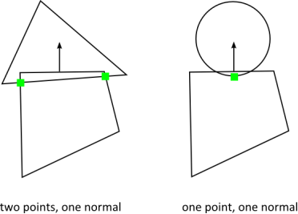

Box2D v2.3.0 User Manual
Copyright © 2007-2013 Erin Catto
Chapter 1 Introduction
1.1 About
Box2D is a 2D rigid body simulation library for games. Programmers can use it in their games to make objects move in realistic ways and make the game world more interactive. From the game engine's point of view, a physics engine is just a system for procedural animation.
Box2D is written in portable C++. Most of the types defined in the engine begin with the b2 prefix. Hopefully this is sufficient to avoid name clashing with your game engine.
1.2 Prerequisites
In this manual I'll assume you are familiar with basic physics concepts, such as mass, force, torque, and impulses. If not, please first consult Google search and Wikipedia.
Box2D was created as part of a physics tutorial at the Game Developer Conference. You can get these tutorials from the download section of box2d.org.
Since Box2D is written in C++, you are expected to be experienced in C++ programming. Box2D should not be your first C++ programming project! You should be comfortable with compiling, linking, and debugging.
Caution
Box2D should not be your first C++ project. Please learn C++ programming, compiling, linking, and debugging before working with Box2D. There are many resources for this on the net.
1.3 About this Manual
This manual covers the majority of the Box2D API. However, not every aspect is covered. You are encouraged to look at the testbed included with Box2D to learn more. Also, the Box2D code base has comments formatted for Doxygen, so it is easy to create a hyper-linked API document.
This manual is only updated with new releases. The version in source control is likely to be out of date.
1.4 Feedback and Reporting Bugs
If you have a question or feedback about Box2D, please leave a comment in the forum. This is also a great place for community discussion.
Box2D issues are tracked using a Google code project. This is a great way to track issues and ensures that your issue will not be lost in the depths of the forums.
Please file bugs and feature requests here: http://code.google.com/p/box2d/
You can help to ensure your issue gets fixed if you provide sufficient detail. A testbed example that reproduces the problem is ideal. You can read about the testbed later in this document.
1.5 Core Concepts
Box2D works with several fundamental concepts and objects. We briefly define these objects here and more details are given later in this document.
shape
A shape is 2D geometrical object, such as a circle or polygon.
rigid body
A chunk of matter that is so strong that the distance between any two bits of matter on the chunk is constant. They are hard like a diamond. In the following discussion we use body interchangeably with rigid body.
fixture
A fixture binds a shape to a body and adds material properties such as density, friction, and restitution. A fixture puts a shape into the collision system (broad-phase) so that it can collide with other shapes.
constraint
A constraint is a physical connection that removes degrees of freedom from bodies. A 2D body has 3 degrees of freedom (two translation coordinates and one rotation coordinate). If we take a body and pin it to the wall (like a pendulum) we have constrained the body to the wall. At this point the body can only rotate about the pin, so the constraint has removed 2 degrees of freedom.
contact constraint
A special constraint designed to prevent penetration of rigid bodies and to simulate friction and restitution. You do not create contact constraints; they are created automatically by Box2D.
joint
This is a constraint used to hold two or more bodies together. Box2D supports several joint types: revolute, prismatic, distance, and more. Some joints may have limits and motors.
joint limit
A joint limit restricts the range of motion of a joint. For example, the human elbow only allows a certain range of angles.
joint motor
A joint motor drives the motion of the connected bodies according to the joint's degrees of freedom. For example, you can use a motor to drive the rotation of an elbow.
world
A physics world is a collection of bodies, fixtures, and constraints that interact together. Box2D supports the creation of multiple worlds, but this is usually not necessary or desirable.
solver
The physics world has a solver that is used to advance time and to resolve contact and joint constraints. The Box2D solver is a high performance iterative solver that operates in order N time, where N is the number of constraints.
continuous collision
The solver advances bodies in time using discrete time steps. Without intervention this can lead to tunneling.
Box2D contains specialized algorithms to deal with tunneling. First, the collision algorithms can interpolate the motion of two bodies to find the first time of impact (TOI). Second, there is a sub-stepping solver that moves bodies to their first time of impact and then resolves the collision.
1.6 Modules
Box2D is composed of three modules: Common, Collision, and Dynamics. The Common module has code for allocation, math, and settings. The Collision module defines shapes, a broad-phase, and collision functions/queries. Finally the Dynamics module provides the simulation world, bodies, fixtures, and joints.

1.7 Units
Box2D works with floating point numbers and tolerances have to be used to make Box2D perform well. These tolerances have been tuned to work well with meters-kilogram-second (MKS) units. In particular, Box2D has been tuned to work well with moving shapes between 0.1 and 10 meters. So this means objects between soup cans and buses in size should work well. Static shapes may be up to 50 meters long without trouble.
Being a 2D physics engine, it is tempting to use pixels as your units. Unfortunately this will lead to a poor simulation and possibly weird behavior. An object of length 200 pixels would be seen by Box2D as the size of a 45 story building.
Caution
Box2D is tuned for MKS units. Keep the size of moving objects roughly between 0.1 and 10 meters. You'll need to use some scaling system when you render your environment and actors. The Box2D testbed does this by using an OpenGL viewport transform. DO NOT USE PIXELS.
It is best to think of Box2D bodies as moving billboards upon which you attach your artwork. The billboard may move in a unit system of meters, but you can convert that to pixel coordinates with a simple scaling factor. You can then use those pixel coordinates to place your sprites, etc. You can also account for flipped coordinate axes.
Box2D uses radians for angles. The body rotation is stored in radians and may grow unbounded. Consider normalizing the angle of your bodies if the magnitude of the angle becomes too large (use b2Body::SetAngle).
Caution
Box2D uses radians, not degrees.
1.8 Factories and Definitions
Fast memory management plays a central role in the design of the Box2D API. So when you create a b2Body or a b2Joint, you need to call the factory functions on b2World. You should never try to allocate these types in another manner.
There are creation functions:
b2Body* b2World::CreateBody(const b2BodyDef* def)
b2Joint* b2World::CreateJoint(const b2JointDef* def)
And there are corresponding destruction functions:
void b2World::DestroyBody(b2Body* body)
void b2World::DestroyJoint(b2Joint* joint)
When you create a body or joint, you need to provide a definition. These definitions contain all the information needed to build the body or joint. By using this approach we can prevent construction errors, keep the number of function parameters small, provide sensible defaults, and reduce the number of accessors.
Since fixtures (shapes) must be parented to a body, they are created and destroyed using a factory method on b2Body:
b2Fixture* b2Body::CreateFixture(const b2FixtureDef* def)
void b2Body::DestroyFixture(b2Fixture* fixture)
There is also shortcut to create a fixture directly from the shape and density.
b2Fixture* b2Body::CreateFixture(const b2Shape* shape, float32 density)
Factories do not retain references to the definitions. So you can create definitions on the stack and keep them in temporary resources.
Chapter 2 Hello Box2D
In the distribution of Box2D is a Hello World project. The program creates a large ground box and a small dynamic box. This code does not contain any graphics. All you will see is text output in the console of the box's position over time.
This is a good example of how to get up and running with Box2D.
2.1 Creating a World
Every Box2D program begins with the creation of a b2World object. b2World is the physics hub that manages memory, objects, and simulation. You can allocate the physics world on the stack, heap, or data section.
It is easy to create a Box2D world. First, we define the gravity vector.
b2Vec2 gravity(0.0f, -10.0f);
Now we create the world object. Note that we are creating the world on the stack, so the world must remain in scope.
b2World world(gravity);
So now we have our physics world, let's start adding some stuff to it.
2.2 Creating a Ground Box
Bodies are built using the following steps:
1. Define a body with position, damping, etc.
2. Use the world object to create the body.
3. Define fixtures with a shape, friction, density, etc.
4. Create fixtures on the body.
For step 1 we create the ground body. For this we need a body definition. With the body definition we specify the initial position of the ground body.
b2BodyDef groundBodyDef;
groundBodyDef.position.Set(0.0f, -10.0f);
For step 2 the body definition is passed to the world object to create the ground body. The world object does not keep a reference to the body definition. Bodies are static by default. Static bodies don't collide with other static bodies and are immovable.
b2Body* groundBody = world.CreateBody(&groundBodyDef);
For step 3 we create a ground polygon. We use the SetAsBox shortcut to form the ground polygon into a box shape, with the box centered on the origin of the parent body.
b2PolygonShape groundBox;
groundBox.SetAsBox(50.0f, 10.0f);
The SetAsBox function takes the half-width and half-height (extents). So in this case the ground box is 100 units wide (x-axis) and 20 units tall (y-axis). Box2D is tuned for meters, kilograms, and seconds. So you can consider the extents to be in meters. Box2D generally works best when objects are the size of typical real world objects. For example, a barrel is about 1 meter tall. Due to the limitations of floating point arithmetic, using Box2D to model the movement of glaciers or dust particles is not a good idea.
We finish the ground body in step 4 by creating the shape fixture. For this step we have a shortcut. We do not have a need to alter the default fixture material properties, so we can pass the shape directly to the body without creating a fixture definition. Later we will see how to use a fixture definition for customized material properties. The second parameter is the shape density in kilograms per meter squared. A static body has zero mass by definition, so the density is not used in this case.
groundBody->CreateFixture(&groundBox, 0.0f);
Box2D does not keep a reference to the shape. It clones the data into a new b2Shape object.
Note that every fixture must have a parent body, even fixtures that are static. However, you can attach all static fixtures to a single static body.
When you attach a shape to a body using a fixture, the shape¡¯s coordinates become local to the body. So when the body moves, so does the shape. A fixture¡¯s world transform is inherited from the parent body. A fixture does not have a transform independent of the body. So we don¡¯t move a shape around on the body. Moving or modifying a shape that is on a body is not supported. The reason is simple: a body with morphing shapes is not a rigid body, but Box2D is a rigid body engine. Many of the assumptions made in Box2D are based on the rigid body model. If this is violated many things will break
2.3 Creating a Dynamic Body
So now we have a ground body. We can use the same technique to create a dynamic body. The main difference, besides dimensions, is that we must establish the dynamic body's mass properties.
First we create the body using CreateBody. By default bodies are static, so we should set the b2BodyType at construction time to make the body dynamic.
b2BodyDef bodyDef;
bodyDef.type = b2_dynamicBody;
bodyDef.position.Set(0.0f, 4.0f);
b2Body* body = world.CreateBody(&bodyDef);
Caution
You must set the body type to b2_dynamicBody if you want the body to move in response to forces.
Next we create and attach a polygon shape using a fixture definition. First we create a box shape:
b2PolygonShape dynamicBox;
dynamicBox.SetAsBox(1.0f, 1.0f);
Next we create a fixture definition using the box. Notice that we set density to 1. The default density is zero. Also, the friction on the shape is set to 0.3.
b2FixtureDef fixtureDef;
fixtureDef.shape = &dynamicBox;
fixtureDef.density = 1.0f;
fixtureDef.friction = 0.3f;
Caution
A dynamic body should have at least one fixture with a non-zero density. Otherwise you will get strange behavior.
Using the fixture definition we can now create the fixture. This automatically updates the mass of the body. You can add as many fixtures as you like to a body. Each one contributes to the total mass.
body->CreateFixture(&fixtureDef);
That's it for initialization. We are now ready to begin simulating.
2.4 Simulating the World (of Box2D)
So we have initialized the ground box and a dynamic box. Now we are ready to set Newton loose to do his thing. We just have a couple more issues to consider.
Box2D uses a computational algorithm called an integrator. Integrators simulate the physics equations at discrete points of time. This goes along with the traditional game loop where we essentially have a flip book of movement on the screen. So we need to pick a time step for Box2D. Generally physics engines for games like a time step at least as fast as 60Hz or 1/60 seconds. You can get away with larger time steps, but you will have to be more careful about setting up the definitions for your world. We also don't like the time step to change much. A variable time step produces variable results, which makes it difficult to debug. So don't tie the time step to your frame rate (unless you really, really have to). Without further ado, here is the time step.
float32 timeStep = 1.0f / 60.0f;
In addition to the integrator, Box2D also uses a larger bit of code called a constraint solver. The constraint solver solves all the constraints in the simulation, one at a time. A single constraint can be solved perfectly. However, when we solve one constraint, we slightly disrupt other constraints. To get a good solution, we need to iterate over all constraints a number of times.
There are two phases in the constraint solver: a velocity phase and a position phase. In the velocity phase the solver computes the impulses necessary for the bodies to move correctly. In the position phase the solver adjusts the positions of the bodies to reduce overlap and joint detachment. Each phase has its own iteration count. In addition, the position phase may exit iterations early if the errors are small.
The suggested iteration count for Box2D is 8 for velocity and 3 for position. You can tune this number to your liking, just keep in mind that this has a trade-off between performance and accuracy. Using fewer iterations increases performance but accuracy suffers. Likewise, using more iterations decreases performance but improves the quality of your simulation. For this simple example, we don't need much iteration. Here are our chosen iteration counts.
int32 velocityIterations = 6;
int32 positionIterations = 2;
Note that the time step and the iteration count are completely unrelated. An iteration is not a sub-step. One solver iteration is a single pass over all the constraints within a time step. You can have multiple passes over the constraints within a single time step.
We are now ready to begin the simulation loop. In your game the simulation loop can be merged with your game loop. In each pass through your game loop you call b2World::Step. Just one call is usually enough, depending on your frame rate and your physics time step.
The Hello World program was designed to be simple, so it has no graphical output. The code prints out the position and rotation of the dynamic body. Here is the simulation loop that simulates 60 time steps for a total of 1 second of simulated time.
for (int32 i = 0; i < 60; ++i)
{
world.Step(timeStep, velocityIterations, positionIterations);
b2Vec2 position = body->GetPosition();
float32 angle = body->GetAngle();
printf("%4.2f %4.2f %4.2f\n", position.x, position.y, angle);
}
The output shows the box falling and landing on the ground box. Your output should look like this:
0.00 4.00 0.00
0.00 3.99 0.00
0.00 3.98 0.00
...
0.00 1.25 0.00
0.00 1.13 0.00
0.00 1.01 0.00
2.5 Cleanup
When a world leaves scope or is deleted by calling delete on a pointer, all the memory reserved for bodies, fixtures, and joints is freed. This is done to improve performance and make your life easier. However, you will need to nullify any body, fixture, or joint pointers you have because they will become invalid.
2.6 The Testbed
Once you have conquered the HelloWorld example, you should start looking at Box2D's testbed. The testbed is a unit-testing framework and demo environment. Here are some of the features:
• Camera with pan and zoom.
• Mouse picking of shapes attached to dynamic bodies.
• Extensible set of tests.
• GUI for selecting tests, parameter tuning, and debug drawing options.
• Pause and single step simulation.
• Text rendering.
The testbed has many examples of Box2D usage in the test cases and the framework itself. I encourage you to explore and tinker with the testbed as you learn Box2D.
Note: the testbed is written using freeglut and GLUI. The testbed is not part of the Box2D library. The Box2D library is agnostic about rendering. As shown by the HelloWorld example, you don't need a renderer to use Box2D.
Chapter 3 Common
3.1 About
The Common module contains settings, memory management, and vector math.
3.2 Settings
The header b2Settings.h contains:
· Types such as int32 and float32
· Constants
· Allocation wrappers
· The version number
Types
Box2D defines various types such as float32, int8, etc. to make it easy to determine the size of structures.
Constants
Box2D defines several constants. These are all documented in b2Settings.h. Normally you do not need to adjust these constants.
Box2D uses floating point math for collision and simulation. Due to round-off error some numerical tolerances are defined. Some tolerances are absolute and some are relative. Absolute tolerances use MKS units.
Allocation wrappers
The settings file defines b2Alloc and b2Free for large allocations. You may forward these calls to your own memory management system.
Version
The b2Version structure holds the current version so you can query this at run-time.
3.3 Memory Management
A large number of the decisions about the design of Box2D were based on the need for quick and efficient use of memory. In this section I will discuss how and why Box2D allocates memory.
Box2D tends to allocate a large number of small objects (around 50-300 bytes). Using the system heap through malloc or new for small objects is inefficient and can cause fragmentation. Many of these small objects may have a short life span, such as contacts, but can persist for several time steps. So we need an allocator that can efficiently provide heap memory for these objects.
Box2D's solution is to use a small object allocator (SOA) called b2BlockAllocator. The SOA keeps a number of growable pools of varying sizes. When a request is made for memory, the SOA returns a block of memory that best fits the requested size. When a block is freed, it is returned to the pool. Both of these operations are fast and cause little heap traffic.
Since Box2D uses a SOA, you should never new or malloc a body, fixture, or joint. However, you do have to allocate a b2World on your own. The b2World class provides factories for you to create bodies, fixtures, and joints. This allows Box2D to use the SOA and hide the gory details from you. Never, call delete or free on a body, fixture, or joint.
While executing a time step, Box2D needs some temporary workspace memory. For this, it uses a stack allocator called b2StackAllocator to avoid per-step heap allocations. You don't need to interact with the stack allocator, but it's good to know it's there.
3.4 Math
Box2D includes a simple small vector and matrix module. This has been designed to suit the internal needs of Box2D and the API. All the members are exposed, so you may use them freely in your application.
The math library is kept simple to make Box2D easy to port and maintain.
Chapter 4 Collision Module
4.1 About
The Collision module contains shapes and functions that operate on them. The module also contains a dynamic tree and broad-phase to acceleration collision processing of large systems.
The collision module is designed to be usable outside of the dynamic system. For example, you can use the dynamic tree for other aspects of your game besides physics.
However, the main purpose of Box2D is to provide a rigid body physics engine, so the using the collision module by itself may feel limited for some applications. Likewise, I will not make a strong effort to document it or polish the APIs.
4.2 Shapes
Shapes describe collision geometry and may be used independently of physics simulation. At a minimum, you should understand how to create shapes that can be later attached to rigid bodies.
Box2D shapes implement the b2Shape base class. The base class defines functions to:
• Test a point for overlap with the shape.
• Perform a ray cast against the shape.
• Compute the shape's AABB.
• Compute the mass properties of the shape.
In addition, each shape has a type member and a radius. The radius even applies to polygons, as discussed below.
Keep in mind that a shape does not know about bodies and stand apart from the dynamics system. Shapes are stored in a compact form that is optimized for size and performance. As such, shapes are not easily moved around. You have to manually set the shape vertex positions to move a shape. However, when a shape is attached to a body using a fixture, the shapes move rigidly with the host body. In summary:
· When a shape is not attached to a body, you can view it¡¯s vertices as being expressed in world-space.
· When a shape is attached to a body, you can view it¡¯s vertices as being expressed in local coordinates.
Circle Shapes
Circle shapes have a position and radius. Circles are solid. You cannot make a hollow circle using the circle shape.
b2CircleShape circle;
circle.m_p.Set(2.0f, 3.0f);
circle.m_radius = 0.5f;
Polygon Shapes
Polygon shapes are solid convex polygons. A polygon is convex when all line segments connecting two points in the interior do not cross any edge of the polygon. Polygons are solid and never hollow. A polygon must have 3 or more vertices.

Polygons vertices are stored with a counter clockwise winding (CCW). We must be careful because the notion of CCW is with respect to a right-handed coordinate system with the z-axis pointing out of the plane. This might turn out to be clockwise on your screen, depending on your coordinate system conventions.

The polygon members are public, but you should use initialization functions to create a polygon. The initialization functions create normal vectors and perform validation.
You can create a polygon shape by passing in a vertex array. The maximal size of the array is controlled by b2_maxPolygonVertices which has a default value of 8. This is sufficient to describe most convex polygons.
The b2PolygonShape::Set function automatically computes the convex hull and establishes the proper winding order. This function is fast when the number of vertices is low. If you increase b2_maxPolygonVertices, then the convex hull computation might become slow. Also note that the convex hull function may eliminate and/or re-order the points you provide. Vertices that are closer than b2_linearSlop may be merged.
// This defines a triangle in CCW order.
b2Vec2 vertices[3];
vertices[0].Set(0.0f, 0.0f);
vertices[1].Set(1.0f, 0.0f);
vertices[2].Set(0.0f, 1.0f);
int32 count = 3;
b2PolygonShape polygon;
polygon.Set(vertices, count);
The polygon shape has some convenience functions to create boxes.
void SetAsBox(float32 hx, float32 hy);
void SetAsBox(float32 hx, float32 hy, const b2Vec2& center, float32 angle);
Polygons inherit a radius from b2Shape. The radius creates a skin around the polygon. The skin is used in stacking scenarios to keep polygons slightly separated. This allows continuous collision to work against the core polygon.

The polygon skin helps prevent tunneling by keeping the polygons separated. This results in small gaps between the shapes. Your visual representation can be larger than the polygon to hide any gaps.
Edge Shapes
Edge shapes are line segments. These are provided to assist in making a free-form static environment for your game. A major limitation of edge shapes is that they can collide with circles and polygons but not with themselves. The collision algorithms used by Box2D require that at least one of two colliding shapes have volume. Edge shapes have no volume, so edge-edge collision is not possible.
// This an edge shape.
b2Vec2 v1(0.0f, 0.0f);
b2Vec2 v2(1.0f, 0.0f);
b2EdgeShape edge;
edge.Set(v1, v2);
In many cases a game environment is constructed by connecting several edge shapes end-to-end. This can give rise to an unexpected artifact when a polygon slides along the chain of edges. In the figure below we see a box colliding with an internal vertex. These ghost collisions are caused when the polygon collides with an internal vertex generating an internal collision normal.
If edge1 did not exist this collision would seem fine. With edge1 present, the internal collision seems like a bug. But normally when Box2D collides two shapes, it views them in isolation.
Fortunately, the edge shape provides a mechanism for eliminating ghost collisions by storing the adjacent ghost vertices. Box2D uses these ghost vertices to prevent internal collisions.

// This is an edge shape with ghost vertices.
b2Vec2 v0(1.7f, 0.0f);
b2Vec2 v1(1.0f, 0.25f);
b2Vec2 v2(0.0f, 0.0f);
b2Vec2 v3(-1.7f, 0.4f);
b2EdgeShape edge;
edge.Set(v1, v2);
edge.m_hasVertex0 = true;
edge.m_hasVertex3 = true;
edge.m_vertex0 = v0;
edge.m_vertex3 = v3;
In general stitching edges together this way is a bit wasteful and tedious. This brings us to chain shapes.
Chain Shapes
The chain shape provides an efficient way to connect many edges together to construct your static game worlds. Chain shapes automatically eliminate ghost collisions and provide two-sided collision.
// This a chain shape with isolated vertices
b2Vec2 vs[4];
vs[0].Set(1.7f, 0.0f);
vs[1].Set(1.0f, 0.25f);
vs[2].Set(0.0f, 0.0f);
vs[3].Set(-1.7f, 0.4f);
b2ChainShape chain;
chain.CreateChain(vs, 4);
You may have a scrolling game world and would like to connect several chains together. You can connect chains together using ghost vertices, like we did with b2EdgeShape.
// Install ghost vertices
chain.SetPrevVertex(b2Vec2(3.0f, 1.0f));
chain.SetNextVertex(b2Vec2(-2.0f, 0.0f));
You may also create loops automatically.
// Create a loop. The first and last vertices are connected.
b2ChainShape chain;
chain.CreateLoop(vs, 4);
Self-intersection of chain shapes is not supported. It might work, it might not. The code that prevents ghost collisions assumes there are no self-intersections of the chain. Also, very close vertices can cause problems. Make sure all your edges are longer than b2_linearSlop (5mm).
Each edge in the chain is treated as a child shape and can be accessed by index. When a chain shape is connected to a body, each edge gets its own bounding box in the broad-phase collision tree.
// Visit each child edge.
for (int32 i = 0; i < chain.GetChildCount(); ++i)
{
b2EdgeShape edge;
chain.GetChildEdge(&edge, i);
¡
}
4.3 Unary Geometric Queries
You can perform a couple geometric queries on a single shape.
Shape Point Test
You can test a point for overlap with a shape. You provide a transform for the shape and a world point.
b2Transfrom transform;
transform.SetIdentity();
b2Vec2 point(5.0f, 2.0f);
bool hit = shape->TestPoint(transform, point);
Edge and chain shapes always return false, even if the chain is a loop.
Shape Ray Cast
You can cast a ray at a shape to get the point of first intersection and normal vector. No hit will register if the ray starts inside the shape. A child index is included for chain shapes because the ray cast will only check a single edge at a time.
b2Transfrom transform;
transform.SetIdentity();
b2RayCastInput input;
input.p1.Set(0.0f, 0.0f, 0.0f);
input.p2.Set(1.0f, 0.0f, 0.0f);
input.maxFraction = 1.0f;
int32 childIndex = 0;
b2RayCastOutput output;
bool hit = shape->RayCast(&output, input, transform, childIndex);
if (hit)
{
b2Vec2 hitPoint = input.p1 + output.fraction * (input.p2 ¨C input.p1);
¡
}
4.4 Binary Functions
The Collision module contains bilateral functions that take a pair of shapes and compute some results. These include:
· Overlap
· Contact manifolds
· Distance
· Time of impact
Overlap
You can test two shapes for overlap using this function:
b2Transform xfA = ¡, xfB = ¡;
bool overlap = b2TestOverlap(shapeA, indexA, shapeB, indexB, xfA, xfB);
Again you must provide child indices to for the case of chain shapes.
Contact Manifolds
Box2D has functions to compute contact points for overlapping shapes. If we consider circle-circle or circle-polygon, we can only get one contact point and normal. In the case of polygon-polygon we can get two points. These points share the same normal vector so Box2D groups them into a manifold structure. The contact solver takes advantage of this to improve stacking stability.

Normally you don¡¯t need to compute contact manifolds directly, however you will likely use the results produced in the simulation.
The b2Manifold structure holds a normal vector and up to two contact points. The normal and points are held in local coordinates. As a convenience for the contact solver, each point stores the normal and tangential (friction) impulses.
The data stored in b2Manifold is optimized for internal use. If you need this data, it is usually best to use the b2WorldManifold structure to generate the world coordinates of the contact normal and points. You need to provide a b2Manifold and the shape transforms and radii.
b2WorldManifold worldManifold;
worldManifold.Initialize(&manifold, transformA, shapeA.m_radius,
transformB, shapeB.m_radius);
for (int32 i = 0; i < manifold.pointCount; ++i)
{
b2Vec2 point = worldManifold.points[i];
¡
}
Notice that the world manifold uses the point count from the original manifold.
During simulation shapes may move and the manifolds may change. Points may be added or removed. You can detect this using b2GetPointStates.
b2PointState state1[2], state2[2];
b2GetPointStates(state1, state2, &manifold1, &manifold2);
if (state1[0] == b2_removeState)
{
// process event
}
Distance
The b2Distance function can be used to compute the distance between two shapes. The distance function needs both shapes to be converted into a b2DistanceProxy. There is also some caching used to warm start the distance function for repeated calls. You can see the details in b2Distance.h.

Time of Impact
If two shapes are moving fast, they may tunnel through each other in a single time step.

The b2TimeOfImpact function is used to determine the time when two moving shapes collide. This is called the time of impact (TOI). The main purpose of b2TimeOfImpact is for tunnel prevention. In particular, it is designed to prevent moving objects from tunneling outside of static level geometry.
This function accounts for rotation and translation of both shapes, however if the rotations are large enough, then the function may miss a collision. However the function will still report a non-overlapped time and will capture all translational collisions.
The time of impact function identities an initial separating axis and ensures the shapes do not cross on that axis. This might miss collisions that are clear at the final positions. While this approach may miss some collisions, it is very fast and adequate for tunnel prevention.

It is difficult to put a restriction on the rotation magnitude. There may be cases where collisions are missed for small rotations. Normally, these missed rotational collisions should not harm game play. They tend to be glancing collisions.
The function requires two shapes (converted to b2DistanceProxy) and two b2Sweep structures. The sweep structure defines the initial and final transforms of the shapes.
You can use fixed rotations to perform a shape cast. In this case, the time of impact function will not miss any collisions.
4.5 Dynamic Tree
The b2DynamicTree class is used by Box2D to organize large numbers of shapes efficiently. The class does not know about shapes. Instead it operates on axis-aligned bounding boxes (AABBs) with user data pointers.
The dynamic tree is a hierarchical AABB tree. Each internal node in the tree has two children. A leaf node is a single user AABB. The tree uses rotations to keep the tree balanced, even in the case of degenerate input.
The tree structure allows for efficient ray casts and region queries. For example, you may have hundreds of shapes in your scene. You could perform a ray cast against the scene in a brute force manner by ray casting each shape. This would be inefficient because it does not take advantage of shapes being spread out. Instead, you can maintain a dynamic tree and perform ray casts against the tree. This traverses the ray through the tree skipping large numbers of shapes.
A region query uses the tree to find all leaf AABBs that overlap a query AABB. This is faster than a brute force approach because many shapes can be skipped.
Normally you will not use the dynamic tree directly. Rather you will go through the b2World class for ray casts and region queries. If you plan to instantiate your own dynamic tree, you can learn how to use it by looking at how Box2D uses it.
4.6 Broad-phase
Collision processing in a physics step can be divided into narrow-phase and broad-phase. In the narrow-phase we compute contact points between pairs of shapes. Imagine we have N shapes. Using brute force, we would need to perform the narrow-phase for N*N/2 pairs.
The b2BroadPhase class reduces this load by using a dynamic tree for pair management. This greatly reduces the number of narrow-phase calls.
Normally you do not interact with the broad-phase directly. Instead, Box2D creates and manages a broad-phase internally. Also, b2BroadPhase is designed with Box2D¡¯s simulation loop in mind, so it is likely not suited for other use cases.
Chapter 5 Dynamics Module
5.1 Overview
The Dynamics module is the most complex part of Box2D and is the part you likely interact with the most. The Dynamics module sits on top of the Common and Collision modules, so you should be somewhat familiar with those by now.
The Dynamics module contains:
· fixture class
· rigid body class
· contact class
· joint classes
· world class
· listener classes
There are many dependencies between these classes so it is difficult to describe one class without referring to another. In the following, you may see some references to classes that have not been described yet. Therefore, you may want to quickly skim this chapter before reading it closely.
The dynamics module is covered in the following chapters.
Chapter 6 Bodies
6.1 About
Bodies have position and velocity. You can apply forces, torques, and impulses to bodies. Bodies can be static, kinematic, or dynamic. Here are the body type definitions:
b2_staticBody
A static body does not move under simulation and behaves as if it has infinite mass. Internally, Box2D stores zero for the mass and the inverse mass. Static bodies can be moved manually by the user. A static body has zero velocity. Static bodies do not collide with other static or kinematic bodies.
b2_kinematicBody
A kinematic body moves under simulation according to its velocity. Kinematic bodies do not respond to forces. They can be moved manually by the user, but normally a kinematic body is moved by setting its velocity. A kinematic body behaves as if it has infinite mass, however, Box2D stores zero for the mass and the inverse mass. Kinematic bodies do not collide with other kinematic or static bodies.
b2_dynamicBody
A dynamic body is fully simulated. They can be moved manually by the user, but normally they move according to forces. A dynamic body can collide with all body types. A dynamic body always has finite, non-zero mass. If you try to set the mass of a dynamic body to zero, it will automatically acquire a mass of one kilogram and it won¡¯t rotate.
Bodies are the backbone for fixtures (shapes). Bodies carry fixtures and move them around in the world. Bodies are always rigid bodies in Box2D. That means that two fixtures attached to the same rigid body never move relative to each other and fixtures attached to the same body don¡¯t collide.
Fixtures have collision geometry and density. Normally, bodies acquire their mass properties from the fixtures. However, you can override the mass properties after a body is constructed.
You usually keep pointers to all the bodies you create. This way you can query the body positions to update the positions of your graphical entities. You should also keep body pointers so you can destroy them when you are done with them.
6.2 Body Definition
Before a body is created you must create a body definition (b2BodyDef). The body definition holds the data needed to create and initialize a body.
Box2D copies the data out of the body definition; it does not keep a pointer to the body definition. This means you can recycle a body definition to create multiple bodies.
Let¡¯s go over some of the key members of the body definition.
Body Type
As discussed at the beginning of this chapter, there are three different body types: static, kinematic, and dynamic. You should establish the body type at creation because changing the body type later is expensive.
bodyDef.type = b2_dynamicBody;
Setting the body type is mandatory.
Position and Angle
The body definition gives you the chance to initialize the position of the body on creation. This has far better performance than creating the body at the world origin and then moving the body.
Caution
Do not create a body at the origin and then move it. If you create several bodies at the origin, then performance will suffer.
A body has two main points of interest. The first point is the body's origin. Fixtures and joints are attached relative to the body's origin. The second point of interest is the center of mass. The center of mass is determined from mass distribution of the attached shapes or is explicitly set with b2MassData. Much of Box2D's internal computations use the center of mass position. For example b2Body stores the linear velocity for the center of mass.
When you are building the body definition, you may not know where the center of mass is located. Therefore you specify the position of the body's origin. You may also specify the body's angle in radians, which is not affected by the position of the center of mass. If you later change the mass properties of the body, then the center of mass may move on the body, but the origin position does not change and the attached shapes and joints do not move.
bodyDef.position.Set(0.0f, 2.0f); // the body's origin position.
bodyDef.angle = 0.25f * b2_pi; // the body's angle in radians.
A rigid body is also a frame of reference. You can define fixtures and joints in that frame. Those fixtures and joint anchors never move in the local frame of the body.
Damping
Damping is used to reduce the world velocity of bodies. Damping is different than friction because friction only occurs with contact. Damping is not a replacement for friction and the two effects should be used together.
Damping parameters should be between 0 and infinity, with 0 meaning no damping, and infinity meaning full damping. Normally you will use a damping value between 0 and 0.1. I generally do not use linear damping because it makes bodies look like they are floating.
bodyDef.linearDamping = 0.0f;
bodyDef.angularDamping = 0.01f;
Damping is approximated for stability and performance. At small damping values the damping effect is mostly independent of the time step. At larger damping values, the damping effect will vary with the time step. This is not an issue if you use a fixed time step (recommended).
Gravity Scale
You can use the gravity scale to adjust the gravity on a single body. Be careful though, increased gravity can decrease stability.
// Set the gravity scale to zero so this body will float
bodyDef.gravityScale = 0.0f;
Sleep Parameters
What does sleep mean? Well it is expensive to simulate bodies, so the less we have to simulate the better. When a body comes to rest we would like to stop simulating it.
When Box2D determines that a body (or group of bodies) has come to rest, the body enters a sleep state which has very little CPU overhead. If a body is awake and collides with a sleeping body, then the sleeping body wakes up. Bodies will also wake up if a joint or contact attached to them is destroyed. You can also wake a body manually.
The body definition lets you specify whether a body can sleep and whether a body is created sleeping.
bodyDef.allowSleep = true;
bodyDef.awake = true;
Fixed Rotation
You may want a rigid body, such as a character, to have a fixed rotation. Such a body should not rotate, even under load. You can use the fixed rotation setting to achieve this:
bodyDef.fixedRotation = true;
The fixed rotation flag causes the rotational inertia and its inverse to be set to zero.
Bullets
Game simulation usually generates a sequence of images that are played at some frame rate. This is called discrete simulation. In discrete simulation, rigid bodies can move by a large amount in one time step. If a physics engine doesn't account for the large motion, you may see some objects incorrectly pass through each other. This effect is called tunneling.
By default, Box2D uses continuous collision detection (CCD) to prevent dynamic bodies from tunneling through static bodies. This is done by sweeping shapes from their old position to their new positions. The engine looks for new collisions during the sweep and computes the time of impact (TOI) for these collisions. Bodies are moved to their first TOI and then the solver performs a sub-step to complete the full time step. There may be additional TOI events within a sub-step.
Normally CCD is not used between dynamic bodies. This is done to keep performance reasonable. In some game scenarios you need dynamic bodies to use CCD. For example, you may want to shoot a high speed bullet at a stack of dynamic bricks. Without CCD, the bullet might tunnel through the bricks.
Fast moving objects in Box2D can be labeled as bullets. Bullets will perform CCD with both static and dynamic bodies. You should decide what bodies should be bullets based on your game design. If you decide a body should be treated as a bullet, use the following setting.
bodyDef.bullet = true;
The bullet flag only affects dynamic bodies.
Activation
You may wish a body to be created but not participate in collision or dynamics. This state is similar to sleeping except the body will not be woken by other bodies and the body's fixtures will not be placed in the broad-phase. This means the body will not participate in collisions, ray casts, etc.
You can create a body in an inactive state and later re-activate it.
bodyDef.active = true;
Joints may be connected to inactive bodies. These joints will not be simulated. You should be careful when you activate a body that its joints are not distorted.
Note that activating a body is almost as expensive as creating the body from scratch. So you should not use activation for streaming worlds. Use creation/destruction for streaming worlds to save memory.
User Data
User data is a void pointer. This gives you a hook to link your application objects to bodies. You should be consistent to use the same object type for all body user data.
b2BodyDef bodyDef;
bodyDef.userData = &myActor;
6.3 Body Factory
Bodies are created and destroyed using a body factory provided by the world class. This lets the world create the body with an efficient allocator and add the body to the world data structure.
b2Body* dynamicBody = myWorld->CreateBody(&bodyDef);
... do stuff ...
myWorld->DestroyBody(dynamicBody);
dynamicBody = NULL;
Caution
You should never use new or malloc to create a body. The world won't know about the body and the body won't be properly initialized.
Box2D does not keep a reference to the body definition or any of the data it holds (except user data pointers). So you can create temporary body definitions and reuse the same body definitions.
Box2D allows you to avoid destroying bodies by deleting your b2World object, which does all the cleanup work for you. However, you should be mindful to nullify body pointers that you keep in your game engine.
When you destroy a body, the attached fixtures and joints are automatically destroyed. This has important implications for how you manage shape and joint pointers.
6.4 Using a Body
After creating a body, there are many operations you can perform on the body. These include setting mass properties, accessing position and velocity, applying forces, and transforming points and vectors.
Mass Data
A body has mass (scalar), center of mass (2-vector), and rotational inertia (scalar). For static bodies, the mass and rotational inertia are set to zero. When a body has fixed rotation, its rotational inertia is zero.
Normally the mass properties of a body are established automatically when fixtures are added to the body. You can also adjust the mass of a body at run-time. This is usually done when you have special game scenarios that require altering the mass.
void SetMassData(const b2MassData* data);
After setting a body's mass directly, you may wish to revert to the natural mass dictated by the fixtures. You can do this with:
void ResetMassData();
The body's mass data is available through the following functions:
float32 GetMass() const;
float32 GetInertia() const;
const b2Vec2& GetLocalCenter() const;
void GetMassData(b2MassData* data) const;
State Information
There are many aspects to the body's state. You can access this state data efficiently through the following functions:
void SetType(b2BodyType type);
b2BodyType GetType();
void SetBullet(bool flag);
bool IsBullet() const;
void SetSleepingAllowed(bool flag);
bool IsSleepingAllowed() const;
void SetAwake(bool flag);
bool IsAwake() const;
void SetActive(bool flag);
bool IsActive() const;
void SetFixedRotation(bool flag);
bool IsFixedRotation() const;
Position and Velocity
You can access the position and rotation of a body. This is common when rendering your associated game actor. You can also set the position, although this is less common since you will normally use Box2D to simulate movement.
bool SetTransform(const b2Vec2& position, float32 angle);
const b2Transform& GetTransform() const;
const b2Vec2& GetPosition() const;
float32 GetAngle() const;
You can access the center of mass position in local and world coordinates. Much of the internal simulation in Box2D uses the center of mass. However, you should normally not need to access it. Instead you will usually work with the body transform. For example, you may have a body that is square. The body origin might be a corner of the square, while the center of mass is located at the center of the square.
const b2Vec2& GetWorldCenter() const;
const b2Vec2& GetLocalCenter() const;
You can access the linear and angular velocity. The linear velocity is for the center of mass. Therefore, the linear velocity may change if the mass properties change.
Chapter 7 Fixtures
7.1 About
Recall that shapes don¡¯t know about bodies and may be used independently of the physics simulation. Therefore Box2D provides the b2Fixture class to attach shapes to bodies. A body may have zero or more fixtures. A body with multiple fixtures is sometimes called a compound body.
Fixtures hold the following:
· a single shape
· broad-phase proxies
· density, friction, and restitution
· collision filtering flags
· back pointer to the parent body
· user data
· sensor flag
These are described in the following sections.
7.2 Fixture Creation
Fixtures are created by initializing a fixture definition and then passing the definition to the parent body.
b2FixtureDef fixtureDef;
fixtureDef.shape = &myShape;
fixtureDef.density = 1.0f;
b2Fixture* myFixture = myBody->CreateFixture(&fixtureDef);
This creates the fixture and attaches it to the body. You do not need to store the fixture pointer since the fixture will automatically be destroyed when the parent body is destroyed. You can create multiple fixtures on a single body.
You can destroy a fixture on the parent body. You may do this to model a breakable object. Otherwise you can just leave the fixture alone and let the body destruction take care of destroying the attached fixtures.
myBody->DestroyFixture(myFixture);
Density
The fixture density is used to compute the mass properties of the parent body. The density can be zero or positive. You should generally use similar densities for all your fixtures. This will improve stacking stability.
The mass of a body is not adjusted when you set the density. You must call ResetMassData for this to occur.
fixture->SetDensity(5.0f);
body->ResetMassData();
Friction
Friction is used to make objects slide along each other realistically. Box2D supports static and dynamic friction, but uses the same parameter for both. Friction is simulated accurately in Box2D and the friction strength is proportional to the normal force (this is called Coulomb friction). The friction parameter is usually set between 0 and 1, but can be any non-negative value. A friction value of 0 turns off friction and a value of 1 makes the friction strong. When the friction force is computed between two shapes, Box2D must combine the friction parameters of the two parent fixtures. This is done with the geometric mean:
float32 friction;
friction = sqrtf(fixtureA->friction * fixtureB->friction);
So if one fixture has zero friction then the contact will have zero friction.
You can override the default mixed friction using b2Contact::SetFriction. This is usually done in the b2ContactListener callback.
Restitution
Restitution is used to make objects bounce. The restitution value is usually set to be between 0 and 1. Consider dropping a ball on a table. A value of zero means the ball won't bounce. This is called an inelastic collision. A value of one means the ball's velocity will be exactly reflected. This is called a perfectly elastic collision. Restitution is combined using the following formula.
float32 restitution;
restitution = b2Max(fixtureA->restitution, fixtureB->restitution);
Restitution is combined this way so that you can have a bouncy super ball without having a bouncy floor.
You can override the default mixed restitution using b2Contact::SetRestitution. This is usually done in the b2ContactListener callback.
When a shape develops multiple contacts, restitution is simulated approximately. This is because Box2D uses an iterative solver. Box2D also uses inelastic collisions when the collision velocity is small. This is done to prevent jitter. See b2_velocityThreshold in b2Settings.h.
Filtering
Collision filtering allows you to prevent collision between fixtures. For example, say you make a character that rides a bicycle. You want the bicycle to collide with the terrain and the character to collide with the terrain, but you don't want the character to collide with the bicycle (because they must overlap). Box2D supports such collision filtering using categories and groups.
Box2D supports 16 collision categories. For each fixture you can specify which category it belongs to. You also specify what other categories this fixture can collide with. For example, you could specify in a multiplayer game that all players don't collide with each other and monsters don't collide with each other, but players and monsters should collide. This is done with masking bits. For example:
playerFixtureDef.filter.categoryBits = 0x0002;
monsterFixtureDef.filter.categoryBits = 0x0004;
playerFixtureDef.filter.maskBits = 0x0004;
monsterFixtureDef.filter.maskBits = 0x0002;
Here is the rule for a collision to occur:
uint16 catA = fixtureA.filter.categoryBits;
uint16 maskA = fixtureA.filter.maskBits;
uint16 catB = fixtureB.filter.categoryBits;
uint16 maskB = fixtureB.filter.maskBits;
if ((catA & maskB) != 0 && (catB & maskA) != 0)
{
// fixtures can collide
}
Collision groups let you specify an integral group index. You can have all fixtures with the same group index always collide (positive index) or never collide (negative index). Group indices are usually used for things that are somehow related, like the parts of a bicycle. In the following example, fixture1 and fixture2 always collide, but fixture3 and fixture4 never collide.
fixture1Def.filter.groupIndex = 2;
fixture2Def.filter.groupIndex = 2;
fixture3Def.filter.groupIndex = -8;
fixture4Def.filter.groupIndex = -8;
Collisions between fixtures of different group indices are filtered according the category and mask bits. In other words, group filtering has higher precedence than category filtering.
Note that additional collision filtering occurs in Box2D. Here is a list:
· A fixture on a static body can only collide with a dynamic body.
· A fixture on a kinematic body can only collide with a dynamic body.
· Fixtures on the same body never collide with each other.
· You can optionally enable/disable collision between fixtures on bodies connected by a joint.
Sometimes you might need to change collision filtering after a fixture has already been created. You can get and set the b2Filter structure on an existing fixture using b2Fixture::GetFilterData and b2Fixture::SetFilterData. Note that changing the filter data will not add or remove contacts until the next time step (see the World class).
7.3 Sensors
Sometimes game logic needs to know when two fixtures overlap yet there should be no collision response. This is done by using sensors. A sensor is a fixture that detects collision but does not produce a response.
You can flag any fixture as being a sensor. Sensors may be static, kinematic, or dynamic. Remember that you may have multiple fixtures per body and you can have any mix of sensors and solid fixtures. Also, sensors only form contacts when at least one body is dynamic, so you will not get a contact for kinematic versus kinematic, kinematic versus static, or static versus static.
Sensors do not generate contact points. There are two ways to get the state of a sensor:
1. b2Contact::IsTouching
2. b2ContactListener::BeginContact and EndContact
Chapter 8 Joints
8.1 About
Joints are used to constrain bodies to the world or to each other. Typical examples in games include ragdolls, teeters, and pulleys. Joints can be combined in many different ways to create interesting motions.
Some joints provide limits so you can control the range of motion. Some joint provide motors which can be used to drive the joint at a prescribed speed until a prescribed force/torque is exceeded.
Joint motors can be used in many ways. You can use motors to control position by specifying a joint velocity that is proportional to the difference between the actual and desired position. You can also use motors to simulate joint friction: set the joint velocity to zero and provide a small, but significant maximum motor force/torque. Then the motor will attempt to keep the joint from moving until the load becomes too strong.
8.2 The Joint Definition
Each joint type has a definition that derives from b2JointDef. All joints are connected between two different bodies. One body may static. Joints between static and/or kinematic bodies are allowed, but have no effect and use some processing time.
You can specify user data for any joint type and you can provide a flag to prevent the attached bodies from colliding with each other. This is actually the default behavior and you must set the collideConnected Boolean to allow collision between to connected bodies.
Many joint definitions require that you provide some geometric data. Often a joint will be defined by anchor points. These are points fixed in the attached bodies. Box2D requires these points to be specified in local coordinates. This way the joint can be specified even when the current body transforms violate the joint constraint --- a common occurrence when a game is saved and reloaded. Additionally, some joint definitions need to know the default relative angle between the bodies. This is necessary to constrain rotation correctly.
Initializing the geometric data can be tedious, so many joints have initialization functions that use the current body transforms to remove much of the work. However, these initialization functions should usually only be used for prototyping. Production code should define the geometry directly. This will make joint behavior more robust.
The rest of the joint definition data depends on the joint type. We cover these now.
8.3 Joint Factory
Joints are created and destroyed using the world factory methods. This brings up an old issue:
Caution
Don't try to create a joint on the stack or on the heap using new or malloc. You must create and destroy bodies and joints using the create and destroy methods of the b2World class.
Here's an example of the lifetime of a revolute joint:
b2RevoluteJointDef jointDef;
jointDef.bodyA = myBodyA;
jointDef.bodyB = myBodyB;
jointDef.anchorPoint = myBodyA->GetCenterPosition();
b2RevoluteJoint* joint = (b2RevoluteJoint*)myWorld->CreateJoint(&jointDef);
... do stuff ...
myWorld->DestroyJoint(joint);
joint = NULL;
It is always good to nullify your pointer after they are destroyed. This will make the program crash in a controlled manner if you try to reuse the pointer.
The lifetime of a joint is not simple. Heed this warning well:
Caution
Joints are destroyed when an attached body is destroyed.
This precaution is not always necessary. You may organize your game engine so that joints are always destroyed before the attached bodies. In this case you don't need to implement the listener class. See the section on Implicit Destruction for details.
8.4 Using Joints
Many simulations create the joints and don't access them again until they are destroyed. However, there is a lot of useful data contained in joints that you can use to create a rich simulation.
First of all, you can get the bodies, anchor points, and user data from a joint.
b2Body* GetBodyA();
b2Body* GetBodyB();
b2Vec2 GetAnchorA();
b2Vec2 GetAnchorB();
void* GetUserData();
All joints have a reaction force and torque. This the reaction force applied to body 2 at the anchor point. You can use reaction forces to break joints or trigger other game events. These functions may do some computations, so don't call them if you don't need the result.
b2Vec2 GetReactionForce();
float32 GetReactionTorque();
8.5 Distance Joint
One of the simplest joint is a distance joint which says that the distance between two points on two bodies must be constant. When you specify a distance joint the two bodies should already be in place. Then you specify the two anchor points in world coordinates. The first anchor point is connected to body 1, and the second anchor point is connected to body 2. These points imply the length of the distance constraint.

Here is an example of a distance joint definition. In this case we decide to allow the bodies to collide.
b2DistanceJointDef jointDef;
jointDef.Initialize(myBodyA, myBodyB, worldAnchorOnBodyA, worldAnchorOnBodyB);
jointDef.collideConnected = true;
The distance joint can also be made soft, like a spring-damper connection. See the Web example in the testbed to see how this behaves.
Softness is achieved by tuning two constants in the definition: frequency and damping ratio. Think of the frequency as the frequency of a harmonic oscillator (like a guitar string). The frequency is specified in Hertz. Typically the frequency should be less than a half the frequency of the time step. So if you are using a 60Hz time step, the frequency of the distance joint should be less than 30Hz. The reason is related to the Nyquist frequency.
The damping ratio is non-dimensional and is typically between 0 and 1, but can be larger. At 1, the damping is critical (all oscillations should vanish).
jointDef.frequencyHz = 4.0f;
jointDef.dampingRatio = 0.5f;
8.6 Revolute Joint
A revolute joint forces two bodies to share a common anchor point, often called a hinge point. The revolute joint has a single degree of freedom: the relative rotation of the two bodies. This is called the joint angle.

To specify a revolute you need to provide two bodies and a single anchor point in world space. The initialization function assumes that the bodies are already in the correct position.
In this example, two bodies are connected by a revolute joint at the first body's center of mass.
b2RevoluteJointDef jointDef;
jointDef.Initialize(myBodyA, myBodyB, myBodyA->GetWorldCenter());
The revolute joint angle is positive when bodyB rotates CCW about the angle point. Like all angles in Box2D, the revolute angle is measured in radians. By convention the revolute joint angle is zero when the joint is created using Initialize(), regardless of the current rotation of the two bodies.
In some cases you might wish to control the joint angle. For this, the revolute joint can optionally simulate a joint limit and/or a motor.
A joint limit forces the joint angle to remain between a lower and upper bound. The limit will apply as much torque as needed to make this happen. The limit range should include zero, otherwise the joint will lurch when the simulation begins.
A joint motor allows you to specify the joint speed (the time derivative of the angle). The speed can be negative or positive. A motor can have infinite force, but this is usually not desirable. Recall the eternal question:
"What happens when an irresistible force meets an immovable object?"
I can tell you it's not pretty. So you can provide a maximum torque for the joint motor. The joint motor will maintain the specified speed unless the required torque exceeds the specified maximum. When the maximum torque is exceeded, the joint will slow down and can even reverse.
You can use a joint motor to simulate joint friction. Just set the joint speed to zero, and set the maximum torque to some small, but significant value. The motor will try to prevent the joint from rotating, but will yield to a significant load.
Here's a revision of the revolute joint definition above; this time the joint has a limit and a motor enabled. The motor is setup to simulate joint friction.
b2RevoluteJointDef jointDef;
jointDef.Initialize(bodyA, bodyB, myBodyA->GetWorldCenter());
jointDef.lowerAngle = -0.5f * b2_pi; // -90 degrees
jointDef.upperAngle = 0.25f * b2_pi; // 45 degrees
jointDef.enableLimit = true;
jointDef.maxMotorTorque = 10.0f;
jointDef.motorSpeed = 0.0f;
jointDef.enableMotor = true;
You can access a revolute joint's angle, speed, and motor torque.
float32 GetJointAngle() const;
float32 GetJointSpeed() const;
float32 GetMotorTorque() const;
You also update the motor parameters each step.
void SetMotorSpeed(float32 speed);
void SetMaxMotorTorque(float32 torque);
Joint motors have some interesting abilities. You can update the joint speed every time step so you can make the joint move back-and-forth like a sine-wave or according to whatever function you want.
... Game Loop Begin ...
myJoint->SetMotorSpeed(cosf(0.5f * time));
... Game Loop End ...
You can also use joint motors to track a desired joint angle. For example:
... Game Loop Begin ...
float32 angleError = myJoint->GetJointAngle() - angleTarget;
float32 gain = 0.1f;
myJoint->SetMotorSpeed(-gain * angleError);
... Game Loop End ...
Generally your gain parameter should not be too large. Otherwise your joint may become unstable.
8.7 Prismatic Joint
A prismatic joint allows for relative translation of two bodies along a specified axis. A prismatic joint prevents relative rotation. Therefore, a prismatic joint has a single degree of freedom.
The prismatic joint definition is similar to the revolute joint description; just substitute translation for angle and force for torque. Using this analogy provides an example prismatic joint definition with a joint limit and a friction motor:
b2PrismaticJointDef jointDef;
b2Vec2 worldAxis(1.0f, 0.0f);
jointDef.Initialize(myBodyA, myBodyB, myBodyA->GetWorldCenter(), worldAxis);
jointDef.lowerTranslation = -5.0f;
jointDef.upperTranslation = 2.5f;
jointDef.enableLimit = true;
jointDef.maxMotorForce = 1.0f;
jointDef.motorSpeed = 0.0f;
jointDef.enableMotor = true;
The revolute joint has an implicit axis coming out of the screen. The prismatic joint needs an explicit axis parallel to the screen. This axis is fixed in the two bodies and follows their motion.
Like the revolute joint, the prismatic joint translation is zero when the joint is created using Initialize(). So be sure zero is between your lower and upper translation limits.
Using a prismatic joint is similar to using a revolute joint. Here are the relevant member functions:
float32 GetJointTranslation() const;
float32 GetJointSpeed() const;
float32 GetMotorForce() const;
void SetMotorSpeed(float32 speed);
void SetMotorForce(float32 force);
8.8 Pulley Joint
A pulley is used to create an idealized pulley. The pulley connects two bodies to ground and to each other. As one body goes up, the other goes down. The total length of the pulley rope is conserved according to the initial configuration.
length1 + length2 == constant
You can supply a ratio that simulates a block and tackle. This causes one side of the pulley to extend faster than the other. At the same time the constraint force is smaller on one side than the other. You can use this to create mechanical leverage.
length1 + ratio * length2 == constant
For example, if the ratio is 2, then length1 will vary at twice the rate of length2. Also the force in the rope attached to body1 will have half the constraint force as the rope attached to body2.
Pulleys can be troublesome when one side is fully extended. The rope on the other side will have zero length. At this point the constraint equations become singular (bad). You should configure collision shapes to prevent this.
Here is an example pulley definition:
b2Vec2 anchor1 = myBody1->GetWorldCenter();
b2Vec2 anchor2 = myBody2->GetWorldCenter();
b2Vec2 groundAnchor1(p1.x, p1.y + 10.0f);
b2Vec2 groundAnchor2(p2.x, p2.y + 12.0f);
float32 ratio = 1.0f;
b2PulleyJointDef jointDef;
jointDef.Initialize(myBody1, myBody2, groundAnchor1, groundAnchor2, anchor1, anchor2, ratio);
Pulley joints provide the current lengths.
float32 GetLengthA() const;
float32 GetLengthB() const;
8.9 Gear Joint
If you want to create a sophisticated mechanical contraption you might want to use gears. In principle you can create gears in Box2D by using compound shapes to model gear teeth. This is not very efficient and might be tedious to author. You also have to be careful to line up the gears so the teeth mesh smoothly. Box2D has a simpler method of creating gears: the gear joint.

The gear joint can only connect revolute and/or prismatic joints.
Like the pulley ratio, you can specify a gear ratio. However, in this case the gear ratio can be negative. Also keep in mind that when one joint is a revolute joint (angular) and the other joint is prismatic (translation), and then the gear ratio will have units of length or one over length.
coordinate1 + ratio * coordinate2 == constant
Here is an example gear joint. The bodies myBodyA and myBodyB are any bodies from the two joints, as long as they are not the same bodies.
b2GearJointDef jointDef;
jointDef.bodyA = myBodyA;
jointDef.bodyB = myBodyB;
jointDef.joint1 = myRevoluteJoint;
jointDef.joint2 = myPrismaticJoint;
jointDef.ratio = 2.0f * b2_pi / myLength;
Note that the gear joint depends on two other joints. This creates a fragile situation. What happens if those joints are deleted?
Caution
Always delete gear joints before the revolute/prismatic joints on the gears. Otherwise your code will crash in a bad way due to the orphaned joint pointers in the gear joint. You should also delete the gear joint before you delete any of the bodies involved.
8.10 Mouse Joint
The mouse joint is used in the testbed to manipulate bodies with the mouse. It attempts to drive a point on a body towards the current position of the cursor. There is no restriction on rotation.
The mouse joint definition has a target point, maximum force, frequency, and damping ratio. The target point initially coincides with the body¡¯s anchor point. The maximum force is used to prevent violent reactions when multiple dynamic bodies interact. You can make this as large as you like. The frequency and damping ratio are used to create a spring/damper effect similar to the distance joint.
Many users have tried to adapt the mouse joint for game play. Users often want to achieve precise positioning and instantaneous response. The mouse joint doesn¡¯t work very well in that context. You may wish to consider using kinematic bodies instead.
8.11 Wheel Joint
The wheel joint restricts a point on bodyB to a line on bodyA. The wheel joint also provides a suspension spring. See b2WheelJoint.h and Car.h for details.

8.12 Weld Joint
The weld joint attempts to constrain all relative motion between two bodies. See the Cantilever.h in the testbed to see how the weld joint behaves.
It is tempting to use the weld joint to define breakable structures. However, the Box2D solver is iterative so the joints are a bit soft. So chains of bodies connected by weld joints will flex.
Instead it is better to create breakable bodies starting with a single body with multiple fixtures. When the body breaks, you can destroy a fixture and recreate it on a new body. See the Breakable example in the testbed.
8.13 Rope Joint
The rope joint restricts the maximum distance between two points. This can be useful to prevent chains of bodies from stretching, even under high load. See b2RopeJoint.h and RopeJoint.h for details.
8.14 Friction Joint
The friction joint is used for top-down friction. The joint provides 2D translational friction and angular friction. See b2FrictionJoint.h and ApplyForce.h for details.
8.15 Motor Joint
A motor joint lets you control the motion of a body by specifying target position and rotation offsets. You can set the maximum motor force and torque that will be applied to reach the target position and rotation. If the body is blocked, it will stop and the contact forces will be proportional the maximum motor force and torque. See b2MotorJoint and MotorJoint.h for details.
Chapter 9 Contacts
9.1 About
Contacts are objects created by Box2D to manage collision between two fixtures. If the fixture has children, such as a chain shape, then a contact exists for each relevant child. There are different kinds of contacts, derived from b2Contact, for managing contact between different kinds of fixtures. For example there is a contact class for managing polygon-polygon collision and another contact class for managing circle-circle collision.
Here is some terminology associated with contacts.
contact point
A contact point is a point where two shapes touch. Box2D approximates contact with a small number of points.
contact normal
A contact normal is a unit vector that points from one shape to another. By convention, the normal points from fixtureA to fixtureB.
contact separation
Separation is the opposite of penetration. Separation is negative when shapes overlap. It is possible that future versions of Box2D will create contact points with positive separation, so you may want to check the sign when contact points are reported.
contact manifold
Contact between two convex polygons may generate up to 2 contact points. Both of these points use the same normal, so they are grouped into a contact manifold, which is an approximation of a continuous region of contact.
normal impulse
The normal force is the force applied at a contact point to prevent the shapes from penetrating. For convenience, Box2D works with impulses. The normal impulse is just the normal force multiplied by the time step.
tangent impulse
The tangent force is generated at a contact point to simulate friction. For convenience, this is stored as an impulse.
contact ids
Box2D tries to re-use the contact force results from a time step as the initial guess for the next time step. Box2D uses contact ids to match contact points across time steps. The ids contain geometric features indices that help to distinguish one contact point from another.
Contacts are created when two fixture¡¯s AABBs overlap. Sometimes collision filtering will prevent the creation of contacts. Contacts are destroyed with the AABBs cease to overlap.
So you might gather that there may be contacts created for fixtures that are not touching (just their AABBs). Well, this is correct. It's a "chicken or egg" problem. We don't know if we need a contact object until one is created to analyze the collision. We could delete the contact right away if the shapes are not touching, or we can just wait until the AABBs stop overlapping. Box2D takes the latter approach because it lets the system cache information to improve performance.
9.2 Contact Class
As mentioned before, the contact class is created and destroyed by Box2D. Contact objects are not created by the user. However, you are able to access the contact class and interact with it.
You can access the raw contact manifold:
b2Manifold* GetManifold();
const b2Manifold* GetManifold() const;
You can potentially modify the manifold, but this is generally not supported and is for advanced usage.
There is a helper function to get the b2WorldManifold:
void GetWorldManifold(b2WorldManifold* worldManifold) const;
This uses the current positions of the bodies to compute world positions of the contact points.
Sensors do not create manifolds, so for them use:
bool touching = sensorContact->IsTouching();
This function also works for non-sensors.
You can get the fixtures from a contact. From those you can get the bodies.
b2Fixture* fixtureA = myContact->GetFixtureA();
b2Body* bodyA = fixtureA->GetBody();
MyActor* actorA = (MyActor*)bodyA->GetUserData();
You can disable a contact. This only works inside the b2ContactListener::PreSolve event, discussed below.
9.3 Accessing Contacts
You can get access to contacts in several ways. You can access the contacts directly on the world and body structures. You can also implement a contact listener.
You can iterate over all contacts in the world:
for (b2Contact* c = myWorld->GetContactList(); c; c = c->GetNext())
{
// process c
}
You can also iterate over all the contacts on a body. These are stored in a graph using a contact edge structure.
for (b2ContactEdge* ce = myBody->GetContactList(); ce; ce = ce->next)
{
b2Contact* c = ce->contact;
// process c
}
You can also access contacts using the contact listener that is described below.
Caution
Accessing contacts off b2World and b2Body may miss some transient contacts that occur in the middle of the time step. Use b2ContactListener to get the most accurate results.
9.4 Contact Listener
You can receive contact data by implementing b2ContactListener. The contact listener supports several events: begin, end, pre-solve, and post-solve.
class MyContactListener : public b2ContactListener
{
public:
void BeginContact(b2Contact* contact)
{ /* handle begin event */ }
void EndContact(b2Contact* contact)
{ /* handle end event */ }
void PreSolve(b2Contact* contact, const b2Manifold* oldManifold)
{ /* handle pre-solve event */ }
void PostSolve(b2Contact* contact, const b2ContactImpulse* impulse)
{ /* handle post-solve event */ }
};
Caution
Do not keep a reference to the pointers sent to b2ContactListener. Instead make a deep copy of the contact point data into your own buffer. The example below shows one way of doing this.
At run-time you can create an instance of the listener and register it with b2World::SetContactListener. Be sure your listener remains in scope while the world object exists.
Begin Contact Event
This is called when two fixtures begin to overlap. This is called for sensors and non-sensors. This event can only occur inside the time step.
End Contact Event
This is called when two fixtures cease to overlap. This is called for sensors and non-sensors. This may be called when a body is destroyed, so this event can occur outside the time step.
Pre-Solve Event
This is called after collision detection, but before collision resolution. This gives you a chance to disable the contact based on the current configuration. For example, you can implement a one-sided platform using this callback and calling b2Contact::SetEnabled(false). The contact will be re-enabled each time through collision processing, so you will need to disable the contact every time-step. The pre-solve event may be fired multiple times per time step per contact due to continuous collision detection.
void PreSolve(b2Contact* contact, const b2Manifold* oldManifold)
{
b2WorldManifold worldManifold;
contact->GetWorldManifold(&worldManifold);
if (worldManifold.normal.y < -0.5f)
{
contact->SetEnabled(false);
}
}
The pre-solve event is also a good place to determine the point state and the approach velocity of collisions.
void PreSolve(b2Contact* contact, const b2Manifold* oldManifold)
{
b2WorldManifold worldManifold;
contact->GetWorldManifold(&worldManifold);
b2PointState state1[2], state2[2];
b2GetPointStates(state1, state2, oldManifold, contact->GetManifold());
if (state2[0] == b2_addState)
{
const b2Body* bodyA = contact->GetFixtureA()->GetBody();
const b2Body* bodyB = contact->GetFixtureB()->GetBody();
b2Vec2 point = worldManifold.points[0];
b2Vec2 vA = bodyA->GetLinearVelocityFromWorldPoint(point);
b2Vec2 vB = bodyB->GetLinearVelocityFromWorldPoint(point);
float32 approachVelocity = b2Dot(vB ¨C vA, worldManifold.normal);
if (approachVelocity > 1.0f)
{
MyPlayCollisionSound();
}
}
}
Post-Solve Event
The post solve event is where you can gather collision impulse results. If you don¡¯t care about the impulses, you should probably just implement the pre-solve event.
It is tempting to implement game logic that alters the physics world inside a contact callback. For example, you may have a collision that applies damage and try to destroy the associated actor and its rigid body. However, Box2D does not allow you to alter the physics world inside a callback because you might destroy objects that Box2D is currently processing, leading to orphaned pointers.
The recommended practice for processing contact points is to buffer all contact data that you care about and process it after the time step. You should always process the contact points immediately after the time step; otherwise some other client code might alter the physics world, invalidating the contact buffer. When you process the contact buffer you can alter the physics world, but you still need to be careful that you don't orphan pointers stored in the contact point buffer. The testbed has example contact point processing that is safe from orphaned pointers.
This code from the CollisionProcessing test shows how to handle orphaned bodies when processing the contact buffer. Here is an excerpt. Be sure to read the comments in the listing. This code assumes that all contact points have been buffered in the b2ContactPoint array m_points.
// We are going to destroy some bodies according to contact
// points. We must buffer the bodies that should be destroyed
// because they may belong to multiple contact points.
const int32 k_maxNuke = 6;
b2Body* nuke[k_maxNuke];
int32 nukeCount = 0;
// Traverse the contact buffer. Destroy bodies that
// are touching heavier bodies.
for (int32 i = 0; i < m_pointCount; ++i)
{
ContactPoint* point = m_points + i;
b2Body* bodyA = point->fixtureA->GetBody();
b2Body* bodyB = point->FixtureB->GetBody();
float32 massA = bodyA->GetMass();
float32 massB = bodyB->GetMass();
if (massA > 0.0f && massB > 0.0f)
{
if (massB > massA)
{
nuke[nukeCount++] = bodyA;
}
else
{
nuke[nukeCount++] = bodyB;
}
if (nukeCount == k_maxNuke)
{
break;
}
}
}
// Sort the nuke array to group duplicates.
std::sort(nuke, nuke + nukeCount);
// Destroy the bodies, skipping duplicates.
int32 i = 0;
while (i < nukeCount)
{
b2Body* b = nuke[i++];
while (i < nukeCount && nuke[i] == b)
{
++i;
}
m_world->DestroyBody(b);
}
9.5 Contact Filtering
Often in a game you don't want all objects to collide. For example, you may want to create a door that only certain characters can pass through. This is called contact filtering, because some interactions are filtered out.
Box2D allows you to achieve custom contact filtering by implementing a b2ContactFilter class. This class requires you to implement a ShouldCollide function that receives two b2Shape pointers. Your function returns true if the shapes should collide.
The default implementation of ShouldCollide uses the b2FilterData defined in Chapter 6, Fixtures.
bool b2ContactFilter::ShouldCollide(b2Fixture* fixtureA, b2Fixture* fixtureB)
{
const b2Filter& filterA = fixtureA->GetFilterData();
const b2Filter& filterB = fixtureB->GetFilterData();
if (filterA.groupIndex == filterB.groupIndex && filterA.groupIndex != 0)
{
return filterA.groupIndex > 0;
}
bool collide = (filterA.maskBits & filterB.categoryBits) != 0 &&
(filterA.categoryBits & filterB.maskBits) != 0;
return collide;
}
At run-time you can create an instance of your contact filter and register it with b2World::SetContactFilter. Make sure your filter stays in scope while the world exists.
MyContactFilter filter;
world->SetContactFilter(&filter);
// filter remains in scope ¡
Chapter 10 World Class
About
The b2World class contains the bodies and joints. It manages all aspects of the simulation and allows for asynchronous queries (like AABB queries and ray-casts). Much of your interactions with Box2D will be with a b2World object.
Creating and Destroying a World
Creating a world is fairly simple. You just need to provide a gravity vector and a Boolean indicating if bodies can sleep. Usually you will create and destroy a world using new and delete.
b2World* myWorld = new b2World(gravity, doSleep);
... do stuff ...
delete myWorld;
Using a World
The world class contains factories for creating and destroying bodies and joints. These factories are discussed later in the sections on bodies and joints. There are some other interactions with b2World that I will cover now.
Simulation
The world class is used to drive the simulation. You specify a time step and a velocity and position iteration count. For example:
float32 timeStep = 1.0f / 60.f;
int32 velocityIterations = 10;
int32 positionIterations = 8;
myWorld->Step(timeStep, velocityIterations, positionIterations);
After the time step you can examine your bodies and joints for information. Most likely you will grab the position off the bodies so that you can update your actors and render them. You can perform the time step anywhere in your game loop, but you should be aware of the order of things. For example, you must create bodies before the time step if you want to get collision results for the new bodies in that frame.
As I discussed above in the HelloWorld tutorial, you should use a fixed time step. By using a larger time step you can improve performance in low frame rate scenarios. But generally you should use a time step no larger than 1/30 seconds. A time step of 1/60 seconds will usually deliver a high quality simulation.
The iteration count controls how many times the constraint solver sweeps over all the contacts and joints in the world. More iteration always yields a better simulation. But don't trade a small time step for a large iteration count. 60Hz and 10 iterations is far better than 30Hz and 20 iterations.
After stepping, you should clear any forces you have applied to your bodies. This is done with the command b2World::ClearForces. This lets you take multiple sub-steps with the same force field.
myWorld->ClearForces();
Exploring the World
The world is a container for bodies, contacts, and joints. You can grab the body, contact, and joint lists off the world and iterate over them. For example, this code wakes up all the bodies in the world:
for (b2Body* b = myWorld->GetBodyList(); b; b = b->GetNext())
{
b->SetAwake(true);
}
Unfortunately real programs can be more complicated. For example, the following code is broken:
for (b2Body* b = myWorld->GetBodyList(); b; b = b->GetNext())
{
GameActor* myActor = (GameActor*)b->GetUserData();
if (myActor->IsDead())
{
myWorld->DestroyBody(b); // ERROR: now GetNext returns garbage.
}
}
Everything goes ok until a body is destroyed. Once a body is destroyed, its next pointer becomes invalid. So the call to b2Body::GetNext() will return garbage. The solution to this is to copy the next pointer before destroying the body.
b2Body* node = myWorld->GetBodyList();
while (node)
{
b2Body* b = node;
node = node->GetNext();
GameActor* myActor = (GameActor*)b->GetUserData();
if (myActor->IsDead())
{
myWorld->DestroyBody(b);
}
}
This safely destroys the current body. However, you may want to call a game function that may destroy multiple bodies. In this case you need to be very careful. The solution is application specific, but for convenience I'll show one method of solving the problem.
b2Body* node = myWorld->GetBodyList();
while (node)
{
b2Body* b = node;
node = node->GetNext();
GameActor* myActor = (GameActor*)b->GetUserData();
if (myActor->IsDead())
{
bool otherBodiesDestroyed = GameCrazyBodyDestroyer(b);
if (otherBodiesDestroyed)
{
node = myWorld->GetBodyList();
}
}
}
Obviously to make this work, GameCrazyBodyDestroyer must be honest about what it has destroyed.
AABB Queries
Sometimes you want to determine all the shapes in a region. The b2World class has a fast log(N) method for this using the broad-phase data structure. You provide an AABB in world coordinates and an implementation of b2QueryCallback. The world calls your class with each fixture whose AABB overlaps the query AABB. Return true to continue the query, otherwise return false. For example, the following code finds all the fixtures that potentially intersect a specified AABB and wakes up all of the associated bodies.
class MyQueryCallback : public b2QueryCallback
{
public:
bool ReportFixture(b2Fixture* fixture)
{
b2Body* body = fixture->GetBody();
body->SetAwake(true);
// Return true to continue the query.
return true;
}
};
...
MyQueryCallback callback;
b2AABB aabb;
aabb.lowerBound.Set(-1.0f, -1.0f);
aabb.upperBound.Set(1.0f, 1.0f);
myWorld->Query(&callback, aabb);
You cannot make any assumptions about the order of the callbacks.
Ray Casts
You can use ray casts to do line-of-sight checks, fire guns, etc. You perform a ray cast by implementing a callback class and providing the start and end points. The world class calls your class with each fixture hit by the ray. Your callback is provided with the fixture, the point of intersection, the unit normal vector, and the fractional distance along the ray. You cannot make any assumptions about the order of the callbacks.
You control the continuation of the ray cast by returning a fraction. Returning a fraction of zero indicates the ray cast should be terminated. A fraction of one indicates the ray cast should continue as if no hit occurred. If you return the fraction from the argument list, the ray will be clipped to the current intersection point. So you can ray cast any shape, ray cast all shapes, or ray cast the closest shape by returning the appropriate fraction.
You may also return of fraction of -1 to filter the fixture. Then the ray cast will proceed as if the fixture does not exist.
Here is an example:
// This class captures the closest hit shape.
class MyRayCastCallback : public b2RayCastCallback
{
public:
MyRayCastCallback()
{
m_fixture = NULL;
}
float32 ReportFixture(b2Fixture* fixture, const b2Vec2& point,
const b2Vec2& normal, float32 fraction)
{
m_fixture = fixture;
m_point = point;
m_normal = normal;
m_fraction = fraction;
return fraction;
}
b2Fixture* m_fixture;
b2Vec2 m_point;
b2Vec2 m_normal;
float32 m_fraction;
};
MyRayCastCallback callback;
b2Vec2 point1(-1.0f, 0.0f);
b2Vec2 point2(3.0f, 1.0f);
myWorld->RayCast(&callback, point1, point2);
Caution
Due to round-off errors, ray casts can sneak through small cracks between polygons in your static environment. If this is not acceptable in your application, please enlarge your polygons slightly.
void SetLinearVelocity(const b2Vec2& v);
b2Vec2 GetLinearVelocity() const;
void SetAngularVelocity(float32 omega);
float32 GetAngularVelocity() const;
Forces and Impulses
You can apply forces, torques, and impulses to a body. When you apply a force or an impulse, you provide a world point where the load is applied. This often results in a torque about the center of mass.
void ApplyForce(const b2Vec2& force, const b2Vec2& point);
void ApplyTorque(float32 torque);
void ApplyLinearImpulse(const b2Vec2& impulse, const b2Vec2& point);
void ApplyAngularImpulse(float32 impulse);
Applying a force, torque, or impulse wakes the body. Sometimes this is undesirable. For example, you may be applying a steady force and want to allow the body to sleep to improve performance. In this case you can use the following code.
if (myBody->IsAwake() == true)
{
myBody->ApplyForce(myForce, myPoint);
}
Coordinate Transformations
The body class has some utility functions to help you transform points and vectors between local and world space. If you don't understand these concepts, please read "Essential Mathematics for Games and Interactive Applications" by Jim Van Verth and Lars Bishop. These functions are efficient (when inlined).
b2Vec2 GetWorldPoint(const b2Vec2& localPoint);
b2Vec2 GetWorldVector(const b2Vec2& localVector);
b2Vec2 GetLocalPoint(const b2Vec2& worldPoint);
b2Vec2 GetLocalVector(const b2Vec2& worldVector);
Lists
You can iterate over a body's fixtures. This is mainly useful if you need to access the fixture's user data.
for (b2Fixture* f = body->GetFixtureList(); f; f = f->GetNext())
{
MyFixtureData* data = (MyFixtureData*)f->GetUserData();
... do something with data ...
}
You can similarly iterate over the body's joint list.
The body also provides a list of associated contacts. You can use this to get information about the current contacts. Be careful, because the contact list may not contain all the contacts that existed during the previous time step.
Chapter 11 Loose Ends
11.1 User Data
The b2Fixture, b2Body, and b2Joint classes allow you to attach user data as a void pointer. This is handy when you are examining Box2D data structures and you want to determine how they relate to the objects in your game engine.
For example, it is typical to attach an actor pointer to the rigid body on that actor. This sets up a circular reference. If you have the actor, you can get the body. If you have the body, you can get the actor.
GameActor* actor = GameCreateActor();
b2BodyDef bodyDef;
bodyDef.userData = actor;
actor->body = box2Dworld->CreateBody(&bodyDef);
Here are some examples of cases where you would need the user data:
• Applying damage to an actor using a collision result.
• Playing a scripted event if the player is inside an axis-aligned box.
• Accessing a game structure when Box2D notifies you that a joint is going to be destroyed.
Keep in mind that user data is optional and you can put anything in it. However, you should be consistent. For example, if you want to store an actor pointer on one body, you should keep an actor pointer on all bodies. Don't store an actor pointer on one body, and a foo pointer on another body. Casting an actor pointer to a foo pointer may lead to a crash.
User data pointers are NULL by default.
For fixtures you might consider defining a user data structure that lets you store game specific information, such as material type, effects hooks, sound hooks, etc.
struct FixtureUserData
{
int materialIndex;
¡
};
FixtureUserData myData = new FixtureUserData;
myData->materialIndex = 2;
b2FixtureDef fixtureDef;
fixtureDef.shape = &someShape;
fixtureDef.userData = myData;
b2Fixture* fixture = body->CreateFixture(&fixtureDef);
¡
delete fixture->GetUserData();
fixture->SetUserData(NULL);
body->DestroyFixture(fixture);
11.2 Implicit Destruction
Box2D doesn't use reference counting. So if you destroy a body it is really gone. Accessing a pointer to a destroyed body has undefined behavior. In other words, your program will likely crash and burn. To help fix these problems, the debug build memory manager fills destroyed entities with FDFDFDFD. This can help find problems more easily in some cases.
If you destroy a Box2D entity, it is up to you to make sure you remove all references to the destroyed object. This is easy if you only have a single reference to the entity. If you have multiple references, you might consider implementing a handle class to wrap the raw pointer.
Often when using Box2D you will create and destroy many bodies, shapes, and joints. Managing these entities is somewhat automated by Box2D. If you destroy a body then all associated shapes and joints are automatically destroyed. This is called implicit destruction.
When you destroy a body, all its attached shapes, joints, and contacts are destroyed. This is called implicit destruction. Any body connected to one of those joints and/or contacts is woken. This process is usually convenient. However, you must be aware of one crucial issue:
Caution
When a body is destroyed, all fixtures and joints attached to the body are automatically destroyed. You must nullify any pointers you have to those shapes and joints. Otherwise, your program will die horribly if you try to access or destroy those shapes or joints later.
To help you nullify your joint pointers, Box2D provides a listener class named b2DestructionListener that you can implement and provide to your world object. Then the world object will notify you when a joint is going to be implicitly destroyed
Note that there no notification when a joint or fixture is explicitly destroyed. In this case ownership is clear and you can perform the necessary cleanup on the spot. If you like, you can call your own implementation of b2DestructionListener to keep cleanup code centralized.
Implicit destruction is a great convenience in many cases. It can also make your program fall apart. You may store pointers to shapes and joints somewhere in your code. These pointers become orphaned when an associated body is destroyed. The situation becomes worse when you consider that joints are often created by a part of the code unrelated to management of the associated body. For example, the testbed creates a b2MouseJoint for interactive manipulation of bodies on the screen.
Box2D provides a callback mechanism to inform your application when implicit destruction occurs. This gives your application a chance to nullify the orphaned pointers. This callback mechanism is described later in this manual.
You can implement a b2DestructionListener that allows b2World to inform you when a shape or joint is implicitly destroyed because an associated body was destroyed. This will help prevent your code from accessing orphaned pointers.
class MyDestructionListener : public b2DestructionListener
{
void SayGoodbye(b2Joint* joint)
{
// remove all references to joint.
}
};
You can then register an instance of your destruction listener with your world object. You should do this during world initialization.
myWorld->SetListener(myDestructionListener);
11.3 Pixels and Coordinate Systems
Recall that Box2D uses MKS (meters, kilograms, and seconds) units and radians for angles. You may have trouble working with meters because your game is expressed in terms of pixels. To deal with this in the testbed I have the whole game work in meters and just use an OpenGL viewport transformation to scale the world into screen space.
float lowerX = -25.0f, upperX = 25.0f, lowerY = -5.0f, upperY = 25.0f;
gluOrtho2D(lowerX, upperX, lowerY, upperY);
If your game must work in pixel units then you should convert your length units from pixels to meters when passing values from Box2D. Likewise you should convert the values received from Box2D from meters to pixels. This will improve the stability of the physics simulation.
You have to come up with a reasonable conversion factor. I suggest making this choice based on the size of your characters. Suppose you have determined to use 50 pixels per meter (because your character is 75 pixels tall). Then you can convert from pixels to meters using these formulas:
xMeters = 0.02f * xPixels;
yMeters = 0.02f * yPixels;
In reverse:
xPixels = 50.0f * xMeters;
yPixels = 50.0f * yMeters;
You should consider using MKS units in your game code and just convert to pixels when you render. This will simplify your game logic and reduce the chance for errors since the rendering conversion can be isolated to a small amount of code.
If you use a conversion factor, you should try tweaking it globally to make sure nothing breaks. You can also try adjusting it to improve stability.
Chapter 12 Debug Drawing
You can implement the b2DebugDraw class to get detailed drawing of the physics world. Here are the available entities:
• shape outlines
• joint connectivity
• broad-phase axis-aligned bounding boxes (AABBs)
• center of mass
This is the preferred method of drawing these physics entities, rather than accessing the data directly. The reason is that much of the necessary data is internal and subject to change.
The testbed draws physics entities using the debug draw facility and the contact listener, so it serves as the primary example of how to implement debug drawing as well as how to draw contact points.
Chapter 13 Limitations
Box2D uses several approximations to simulate rigid body physics efficiently. This brings some limitations.
Here are the current limitations:
1. Stacking heavy bodies on top of much lighter bodies is not stable. Stability degrades as the mass ratio passes 10:1.
2. Chains of bodies connected by joints may stretch if a lighter body is supporting a heavier body. For example, a wrecking ball connect to a chain of light weight bodies may not be stable. Stability degrades as the mass ratio passes 10:1.
3. There is typically around 0.5cm of slop in shape versus shape collision.
4. Continuous collision does not handle joints. So you may see joint stretching on fast moving objects.
5. Box2D uses the symplectic Euler integration scheme. It does not reproduce parabolic motion of projectiles and has only first-order accuracy. However it is fast and has good stability.
6. Box2D uses an iterative solver to provide real-time performance. You will not get precisely rigid collisions or pixel perfect accuracy. Increasing the iterations will improve accuracy.
Chapter 14 References
Erin Catto¡¯s GDC Tutorials: http://code.google.com/p/box2d/downloads/list
Collision Detection in Interactive 3D Environments, Gino van den Bergen, 2004
Real-Time Collision Detection, Christer Ericson, 2005